One street, four lights
Built in three.js from primitives, baked to stills, then given a screen-print pass with real grain lifted from a 1930s public-domain poster. The same scene runs live.
hero/street-sunrise-{800,1440,2400}.avif · webp · 1440.jpghero/street-noon-*hero/street-sunset-*hero/street-night-*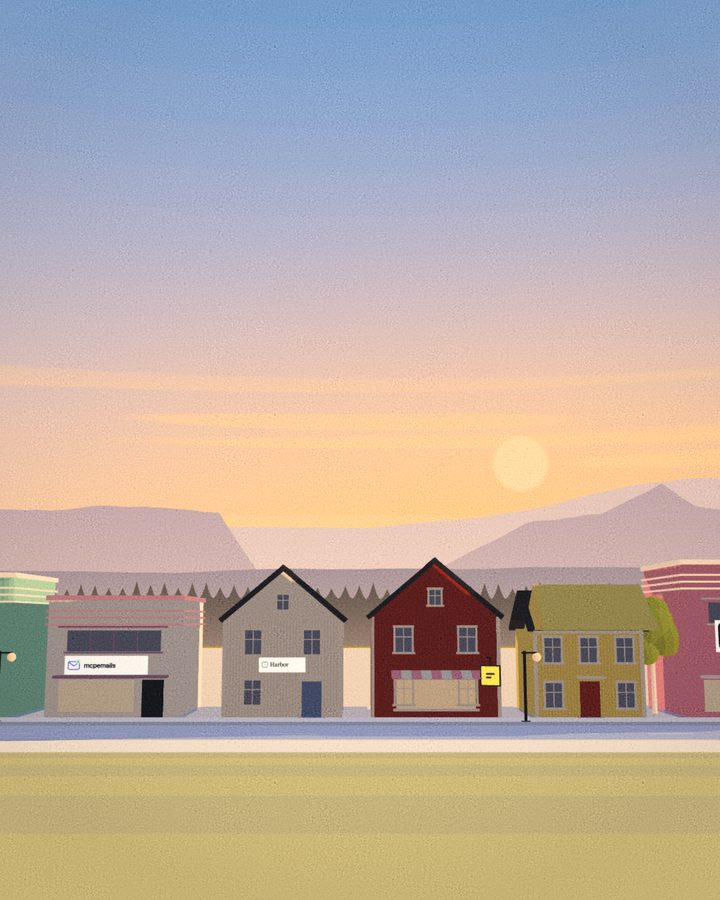
*-portrait-{640,1080}.avif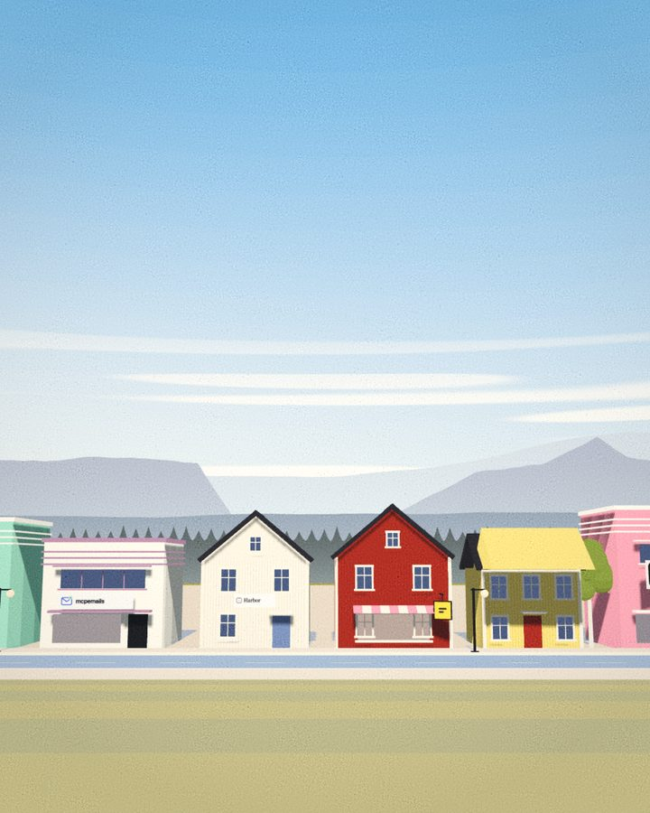
4:5 art direction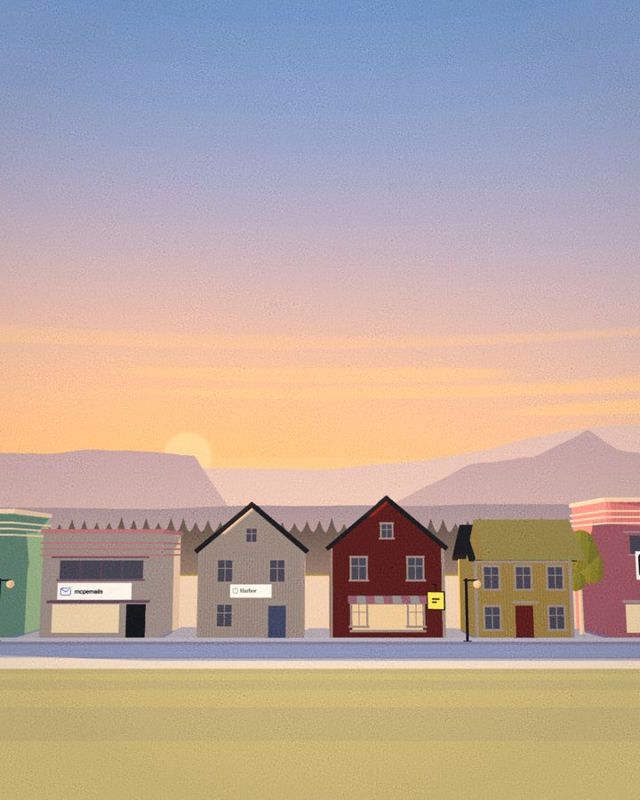
tall sky for type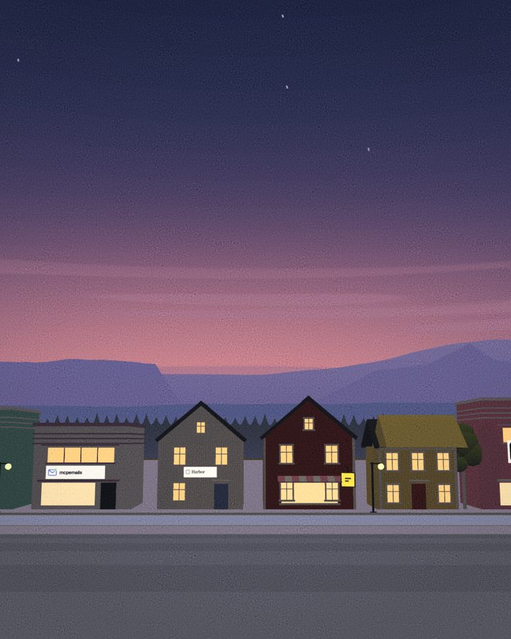
stars only when dimThe sun-A
A rounded A whose crossbar is a horizon, with the sun half risen inside it. In the wordmark the mark simply is the first letter.
identity/mark.svgidentity/mark-mono.svg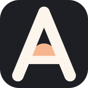
identity/favicon*identity/lockup.svg · wordmark.svg (plain A)identity/lockup-light.svg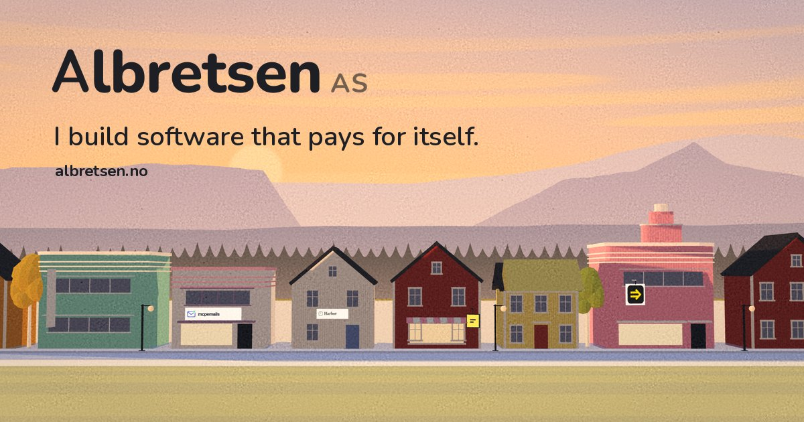
identity/og-1200x630.jpgLA dusk, falu red
Peach, mauve, smog blue and palm black carry the sky; falu red, ochre and the Miami pastels live on the facades. Paper is never pure white, ink is never pure black.
Nunito, rounded and sunny
One family, variable 200–1000, self-hosted (Latin subset, 38 KB). Headlines 800–900 with tight tracking; body 500.
I build software that pays for itself.
MCP Emails gives AI agents a real inbox: 17 tools, about 100 email providers, open source. Fun Libs has passed 113,000 installs with no marketing. Toolrails is one MCP URL that gives an agent every tool.
Numbers in tabular figures: $782 MRR · 549 commits · 2016 → 2026
Every shop keeps its own hours
Each live product has a shopfront on the street, with its real logo on the sign, shown at its own time of day. Retired products get enamel house-number plaques.
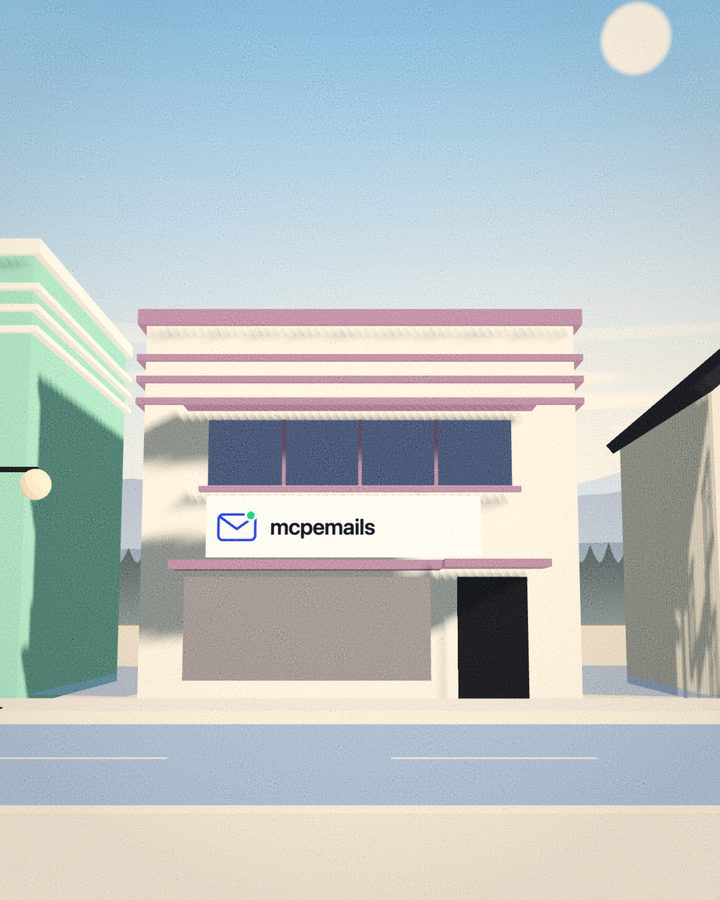
products/mcp-emails-*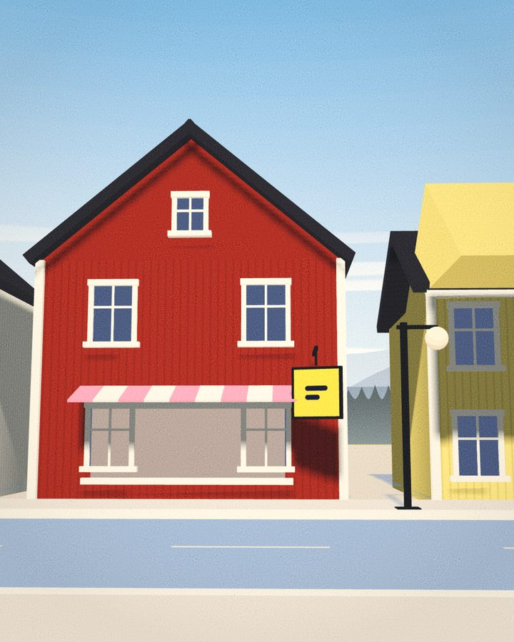
products/fun-libs-*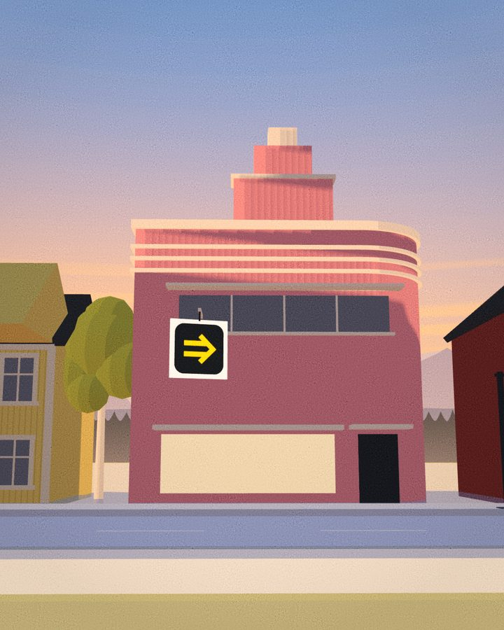
products/toolrails-*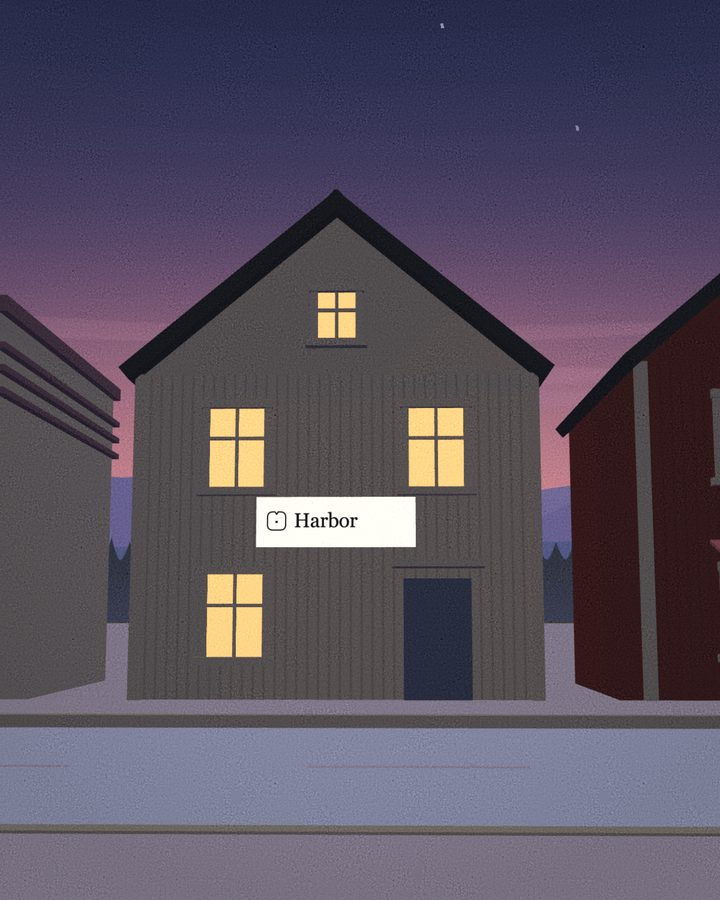
products/harbor-*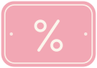
Texture and small things
Paper and spatter come from a real 1930s silkscreen poster in the public domain; the rest is drawn in the same inks.
extras/paper-grain.pngextras/drybrush-crown.pngextras/horizon-divider.svgextras/pattern-clapboard.svgextras/pattern-speedlines.svg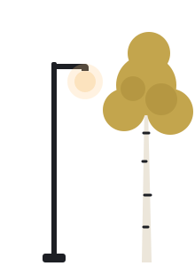
extras/*.svgSlow, like a long evening
assets/motion.css + motion.js. The masthead above is the Long Dissolve in its auto variant.
The live sky over Norway, redrawn every minute. Paints --sky-zenith, --sky-horizon, --sky-glow, --sky-sun, --sky-night on :root.
The street, live
interactive/street.js: the whole scene in three.js r170, lit by the real sun over Norway. Loads only on click here; on the site, after first paint.